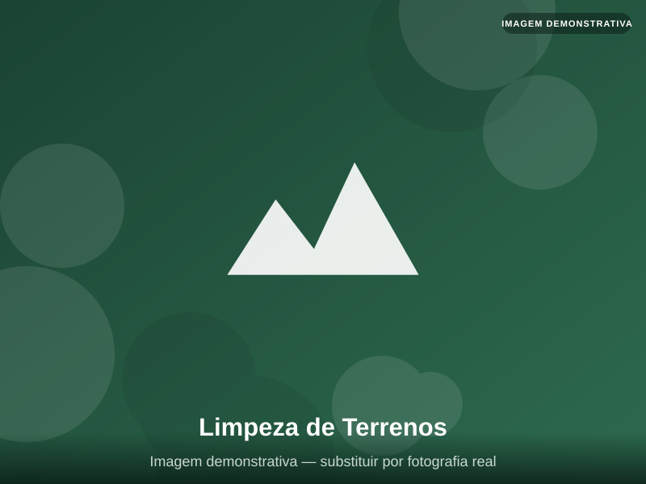
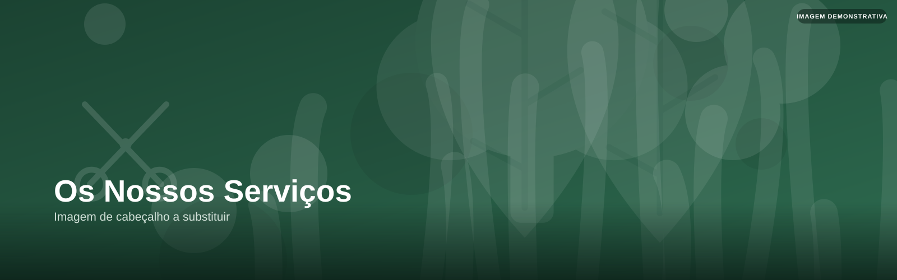
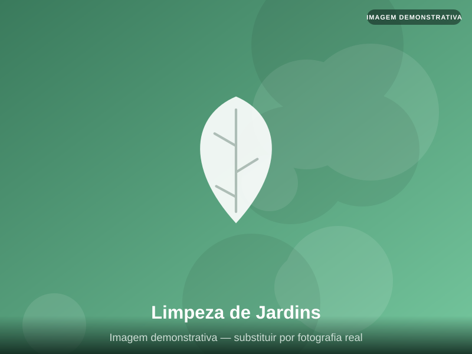
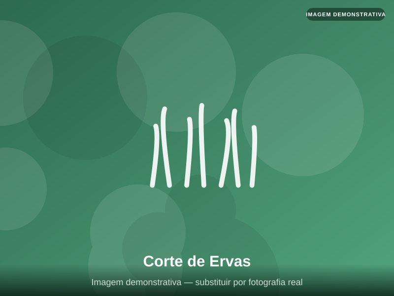
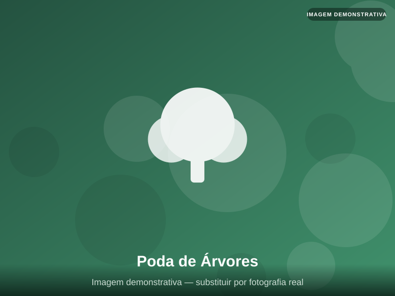
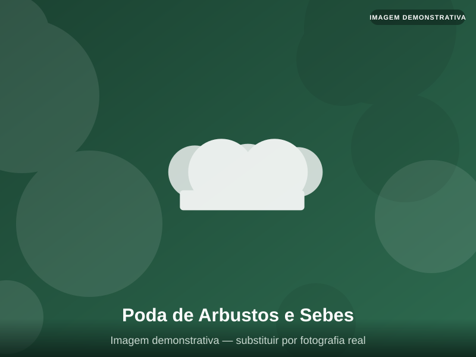
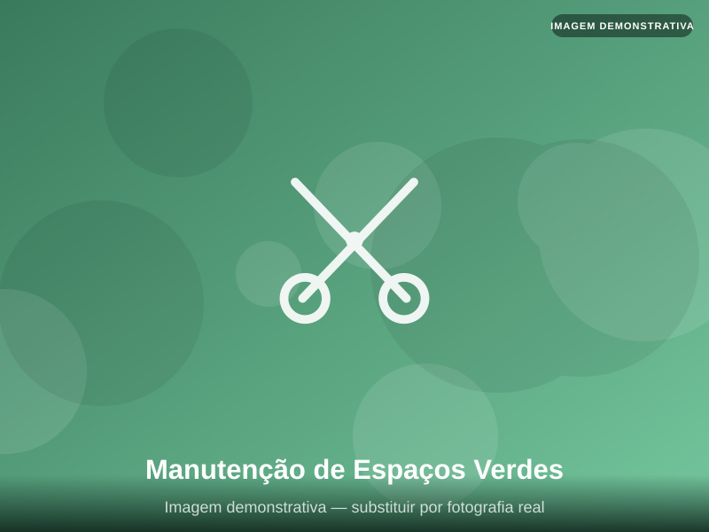
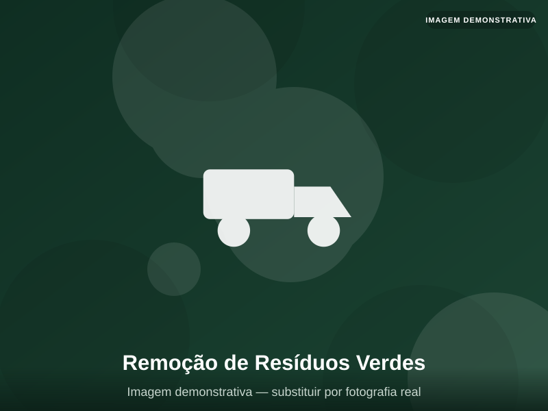

Limpeza de Terrenos
Remoção completa de vegetação, ervas, mato e resíduos, preparando o terreno para o que precisar.
- Terreno limpo
- Equipamento profissional
- Sem compromisso

Início Serviços
Da limpeza de pequenos jardins à desmatação de grandes terrenos: conheça todos os serviços que a Corte Certo tem para o seu espaço exterior.

Remoção completa de vegetação, ervas, mato e resíduos, preparando o terreno para o que precisar.

Limpeza cuidada de jardins e espaços verdes, mantendo cada canteiro e relvado bem tratado.

Corte regular de ervas daninhas e vegetação espontânea, prevenindo o crescimento descontrolado.
Corte e controlo de mato em terrenos de qualquer dimensão, com equipamento robusto.
Limpeza de terrenos com vegetação densa e de difícil acesso, incluindo mato alto e silvas.
Roçagem mecânica de terrenos, uma solução eficaz para a prevenção de incêndios rurais.

Poda técnica de árvores para promover a sua saúde, segurança e melhor desenvolvimento.

Modelação e manutenção de arbustos ornamentais, mantendo o jardim com um aspeto cuidado.
Corte e alinhamento profissional de sebes, garantindo linhas uniformes e bem definidas.
Recuperação de terrenos ao abandono, devolvendo-lhes um estado limpo e seguro.
Preparação e limpeza de terrenos antes do início de obras de construção.
Limpeza de campos e terrenos agrícolas, facilitando o seu aproveitamento e manutenção.
Manutenção periódica e programada de jardins, garantindo um espaço sempre cuidado.

Cuidado contínuo de espaços verdes públicos ou privados, ao longo de todo o ano.

Recolha e transporte de resíduos verdes resultantes dos trabalhos de limpeza e corte.
Limpeza final do espaço após os trabalhos de corte, sem deixar vestígios de vegetação cortada.
Preparação de terrenos para novos projetos, plantações ou outras utilizações futuras.
Soluções à medida das necessidades específicas do seu terreno ou jardim. Fale connosco.
Não encontrámos nenhum serviço com esse termo. Tente outra palavra ou fale connosco diretamente.
Fale connosco: encontramos a solução certa para o seu jardim ou terreno.
Pedir Orçamento